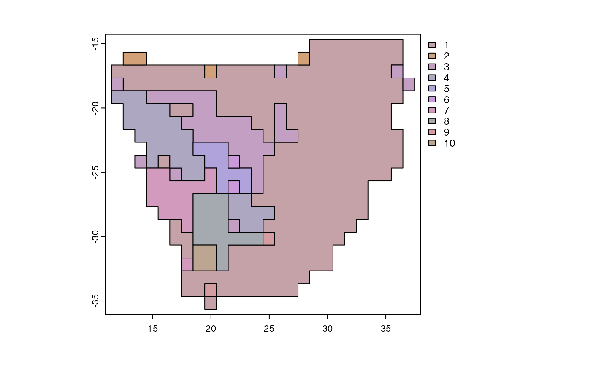

R/functional_beta.R
functional_beta.RdComputes turnover of functional diversity using k-prototypes clustering algorithm tailored for mixed-type functional traits (numeric and categorical) to generate an integer vector of cluster assignments. The ranges of each species in a cluster are collapsed to generate a new community matrix based on the presence or absence of cluster membership in a grid cell. A grade of membership model or beta diversity is then fitted to the new reduced community matrix for further analysis.
functional_beta(
x,
trait = NULL,
bin = 10,
na.rm = "no",
quick_elbow = FALSE,
abundance = FALSE,
...
)A dataframe or sparse community matrix of species occurrences.
A data frame with the first column labeled “species” containing the taxonomic groups to be evaluated whereas the remaining columns contain the various functional traits. The variables should be mixed-type combining numeric and categorical variables.
The desired number of clusters or bins. If elbow=TRUE,
the optimal number of clusters is determined by running the analysis
multiple times varying from 2 to bin.
Logical, whether NA values should be removed prior to computation
Quickly estimate the 'elbow' of a scree plot to determine the optimal number of clusters.
Logical, whether the reduced matrix should be returned as presence or absence of cluster representation or as abundances of cluster memberships
Further arguments passed to or from other methods.
A list with three dissimilarity matrices capturing: (i) turnover (replacement), (ii) nestedness-resultant component, and (iii) total dissimilarity (i.e. the sum of both components).
For index.family="sorensen" the three matrices are:
beta.sim A distance object, dissimilarity matrix accounting
for spatial turnover (replacement), measured as Simpson pair-wise
dissimilarity.
beta.sne dist object, dissimilarity matrix accounting for
nestedness-resultant dissimilarity, measured as the nestedness-fraction
of Sorensen pair-wise dissimilarity
beta.sor dist object, dissimilarity matrix accounting
for total dissimilarity, measured as Sorensen pair-wise dissimilarity
(a monotonic transformation of beta diversity)
For index.family="jaccard" the three matrices are:
beta.jtu A distance object, dissimilarity matrix accounting
for spatial turnover, measured as the turnover-fraction of Jaccard
pair-wise dissimilarity
beta.jne dist object, dissimilarity matrix accounting
for nestedness-resultant dissimilarity, measured as the
nestedness-fraction of Jaccard pair-wise dissimilarity
beta.jac dist object, dissimilarity matrix accounting
for beta diversity, measured as Jaccard pair-wise dissimilarity (a
monotonic transformation of beta diversity)
Szepannek, G. (2018) clustMixType: User-friendly clustering of mixed-type data in R. The R Journal, 10: 200-208.
# \donttest{
library(terra)
data(africa)
p <- vect(system.file("ex/sa.json", package = "phyloregion"))
fb <- functional_beta(x=africa$comm, trait = africa$trait)
#> Assuming `range_size`, `habit`, `h_max`, `growth_duration`, `seed_size` as functional traits.
#> # NAs in variables:
#> habit growth_duration range_size h_max seed_size
#> 6 340 0 18 686
#> Estimated lambda: 488220.6
#>
p <- phyloregion(fb[[1]], pol = p)
#> Warning: convex combination of colors in polar coordinates (polarLUV) may not be appropriate
#> Warning: convex combination of colors in polar coordinates (polarLUV) may not be appropriate
plot(p)

# }